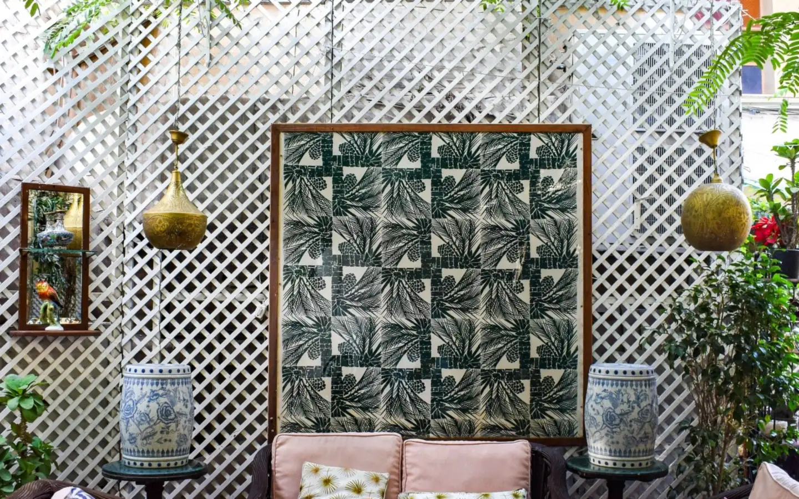
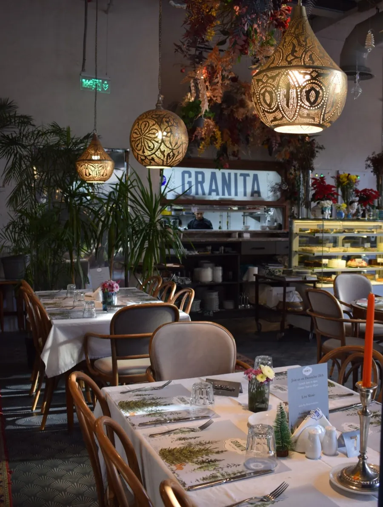
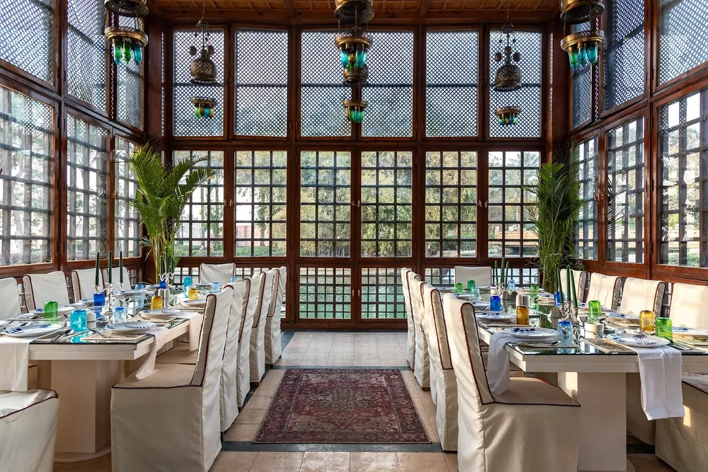
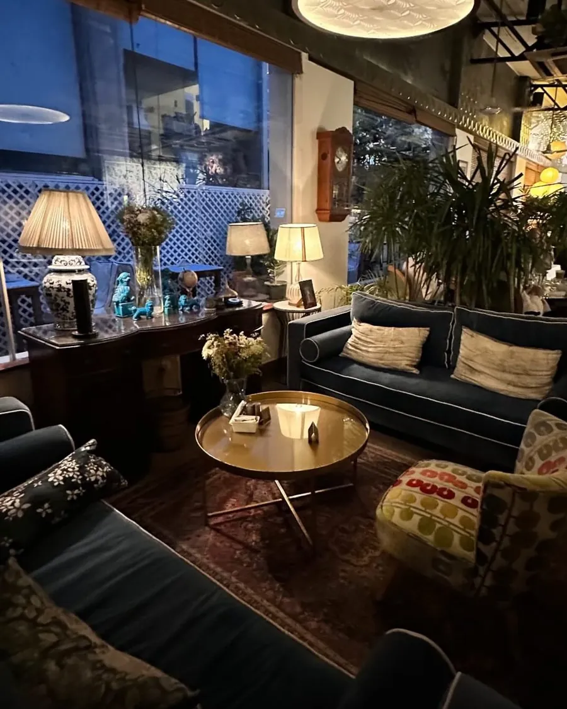
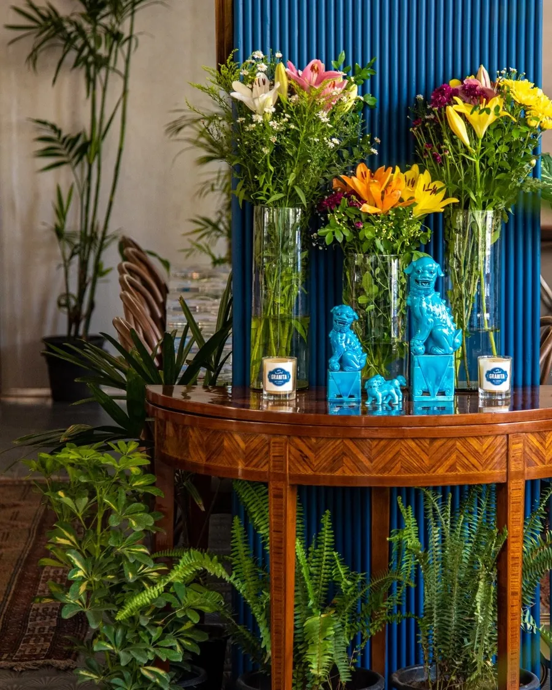
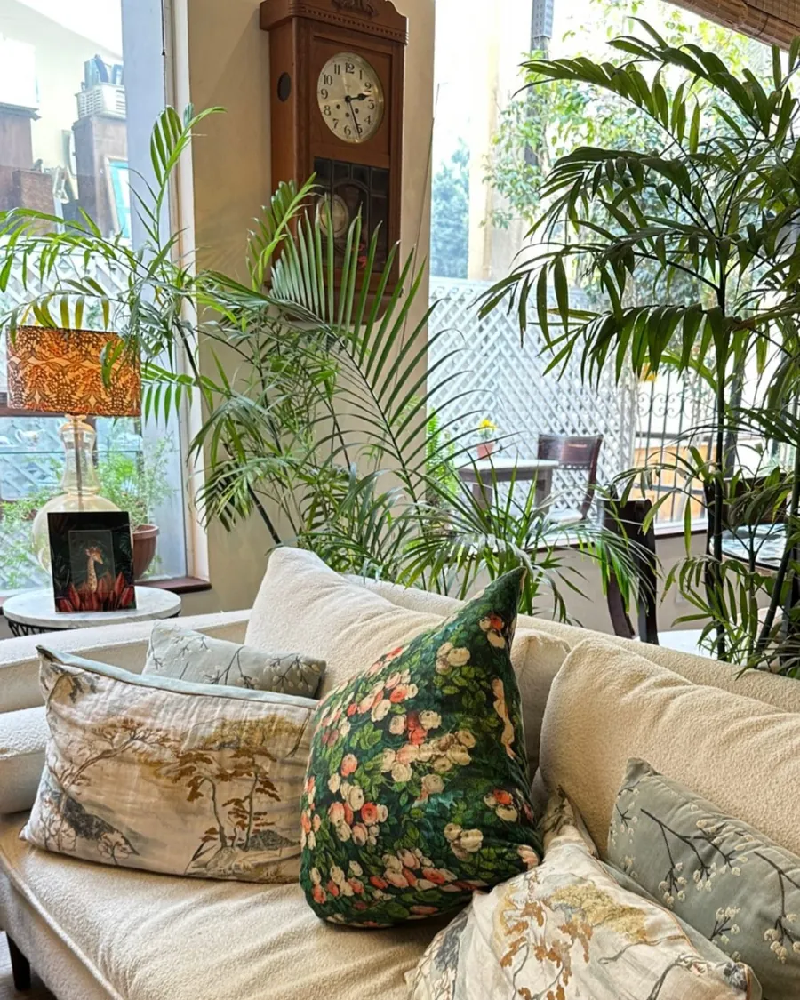
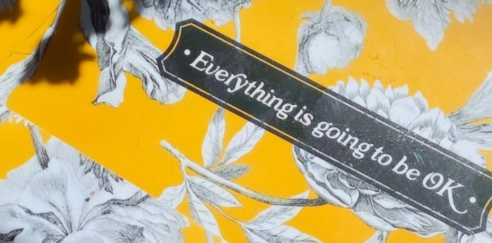

Zamalek
Chandeliers, blue-and-white jars, a garden under the trees and live piano.
5 Michel Lutfallah St, inside All Saints' Cathedral grounds, Zamalek
Daily 7 AM to 11 PM

A contemporary take on the Grand Cafés of Cosmopolitan Egypt in the 30s & 40s.
Chandeliers, blue-and-white jars, a garden under the trees and live piano.
5 Michel Lutfallah St, inside All Saints' Cathedral grounds, Zamalek
Daily 7 AM to 11 PM

Navy fluted columns, brass lanterns and the dressed-dog portrait in its gold oval.
Arkan Plaza, Sheikh Zayed
Daily 7 AM to 12 AM
The sister house inside Al Azhar Park, on the lake, with its own look and its own menu.
Al Azhar Park, 10 Salah Salem St
Daily 7 AM to 10 PM







Granita Lamoon is old fashioned frozen lemonade. Granita Karkadé and Berries is fresh hibiscus with berries. Sobia Granita is coconut based, Egyptian style.
Then the sweets: Fameux Nougat Glacé, Crème Caramel the very old fashioned way, Batata Gratinée, Coupe Liégeoise, Pêche Melba and a Banana Split, with the daily pastries and gâteau at the display fridge.



A pianist plays in the rooms at Zamalek and Arkan. Call the house to ask which evenings.
Granita hosts private events and does corporate catering. Message the house on Instagram or call the house you have in mind.
Iftar and suhoor are part of Ramadan at Granita. Call the house you plan to visit.
Granita Zamalek is inside the grounds of All Saints' Cathedral. Guests say there is no sign outside and the map pin can land you at the back of the café.
5 Michel Lutfallah St
All Saints' Cathedral grounds, Zamalek
Daily 7 AM to 11 PM
5 Michel Lutfallah St, inside All Saints' Cathedral grounds, Zamalek. Call before you come.
Daily 7 AM to 12 AM
Arkan Plaza, Sheikh Zayed. Call before you come.
Daily 7 AM to 10 PM
Al Azhar Park, 10 Salah Salem St. Call before you come.
Hours can change. Call before you come to confirm. Instagram: @granitacairo and @alkhan_azharpark.